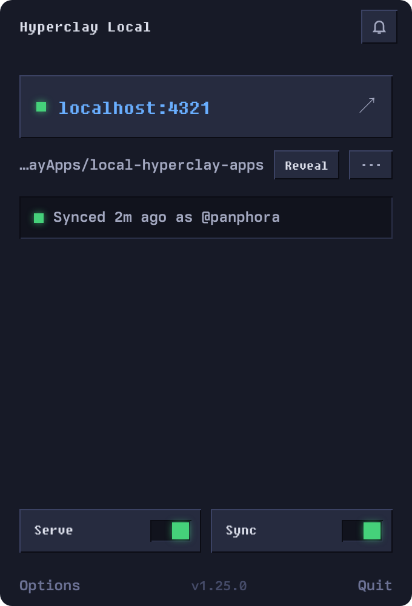

An HTML file that saves itself
Hyperclay Local is a free, source-available desktop app that runs a tiny server on your machine.
No database. No build step. No backend.

Point it at a folder
Pick a folder inside your home folder. On first setup, Hyperclay Local starts serving it automatically. Open a malleable document in the workspace or your browser, edit it, and save back to disk. Get started.
A file that remembers
An HTML file can do almost anything. It can lay out an interface, run JavaScript, call browser APIs, and respond to every click and keystroke.
The one thing it cannot do is remember. Close the tab and every change is gone.
A malleable document fixes that. It serializes its own DOM and posts it to a local server, which writes it back to the file on disk. Open it again and your changes are still there.
That makes one file a complete application. Its layout, its logic, and its data all live in the same document. You can email it, commit it to git, or drop it in Dropbox, and it still works.
What the app actually does
ClayJS prepares your page's HTML and sends it to Hyperclay Local. The local server writes the document back to its file and keeps version history on disk. Read how saving works.
See what you can build
These are not screenshots. Every app below is a single HTML file running live in this page. Type in the wiki, check off a to-do, change a number in the budget and watch the total update. Run the same file under Hyperclay Local and every change saves itself to disk.
- Home
- Ideas
- Reading
What I did today
| Item | Cost |
|---|---|
| Rent | |
| Groceries | |
| Coffee | |
| Internet | |
| Total |
- Pancakes
- Guacamole
- Spaghetti
Pick a recipe.
- Dune
- The Hobbit
- Project Hail Mary
- Sapiens
Why not a static file, localStorage, or a backend?
- A static file can't save. Open one from disk and every edit vanishes on refresh. Hyperclay Local gives that same file one new power: it can write its own changes back.
- localStorage is trapped. Its data lives inside one browser profile, in a form you can't read, and clearing your browser wipes it. Here the data is the file. Open it in any editor and it's all there, in plain HTML.
- A backend is a lot to own. A database, a server, a build, a deploy, a host. This is one file and a local process. When you want more, sync to hyperclay.com is one toggle, and it stays off until you turn it on.
What you get
Extra features
- Tailwind CSS on save. Point a stylesheet at
/tailwindcss/{yourFileName}.cssand the server compiles Tailwind on every save, including only the utilities that file actually uses. No build step to run yourself. - Cloud sync, if you want it. Turn on sync to mirror your folder to your hyperclay.com account and back. It is off by default, the API key is encrypted with your OS keychain, and your files work exactly the same with it off.
- ClayJS. Type directly into a heading, format a note, or fill in a form. ClayJS can save the text and field values as part of the document. Build your first editable file.
Download
Desktop app for macOS, Windows, and Linux. Free to use, source available, no account required. It is an Electron app, so each download is around 100 MB.
- macOS Apple Silicon HyperclayLocal-1.33.0-arm64.dmg 111.1 MB
- macOS Intel HyperclayLocal-1.33.0.dmg 117.6 MB
- Windows 64-bit HyperclayLocal-Setup-1.33.0.exe 96.3 MB
- Linux x86_64 AppImage HyperclayLocal-1.33.0.AppImage 132.7 MB
- Linux ARM64 AppImage HyperclayLocal-1.33.0-arm64.AppImage 132.5 MB
Source code: github.com/panphora/hyperclay-local
FAQ
How does the saving actually work?
ClayJS prepares your page's HTML and sends it to Hyperclay Local. The local server writes the document back to its file and keeps version history on disk. Read how saving works.
Is it safe to run?
The app uses several layers of protection:
- Sandboxed renderer. Web content runs in an isolated Electron context, separate from the main process.
- IPC security. The renderer and main process talk over secure Electron IPC channels.
- Path traversal protection. The server validates every file path so nothing can be written outside the selected folder.
- Filename sanitization. Saved filenames allow only letters, numbers, hyphens, and underscores.
- Versioned backups. The server keeps the previous version of a file before it overwrites.
The app's source is public. You can audit the full codebase at github.com/panphora/hyperclay-local.
Do my files ever leave my machine?
No. Local editing is entirely on your computer, with no analytics and no telemetry except an occasional update check. The only time a file leaves is if you turn on cloud sync yourself, which pushes to your own hyperclay.com account. It stays off until you enable it.
Do I have to use ClayJS?
No. ClayJS provides editing and saving, but you can write your own client using the same save endpoint. Your document stays an HTML file.
Setup and troubleshooting
For installation and saving issues, see Troubleshooting. For folder setup and port conflicts, see Folders and ports.
Linux says permission denied
AppImage files need to be marked as executable:
chmod +x HyperclayLocal-*.AppImage
The app is the file. Read it, edit it, save it, or walk away with it.
Most tools sit between you and your work. Hyperclay Local does not: one file on your disk, yours for as long as you keep it. Frontend and done.